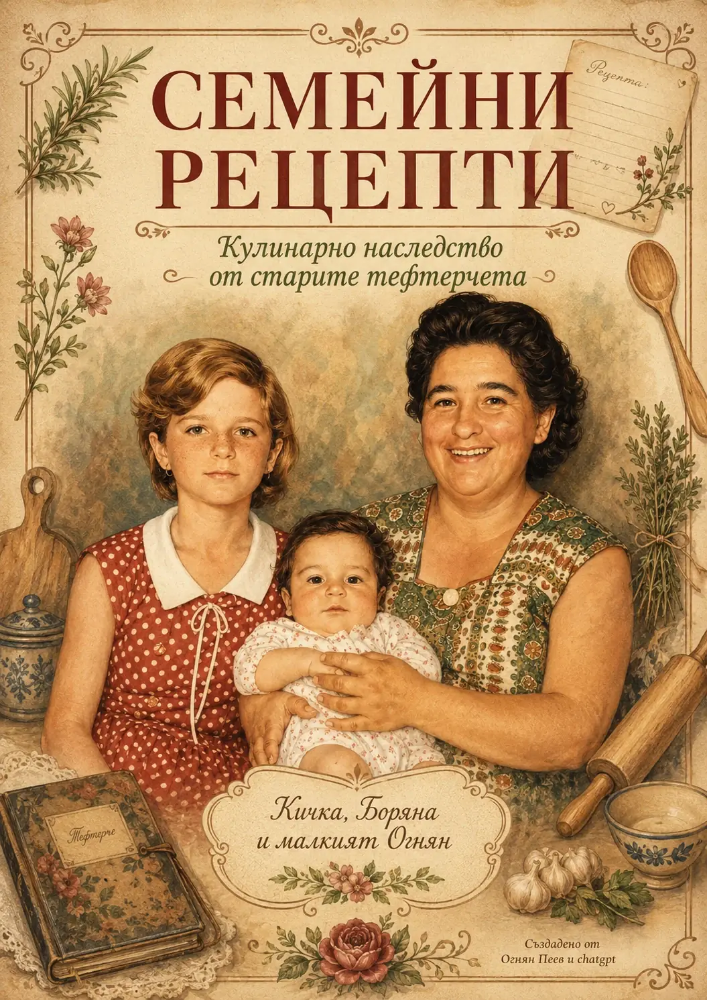

Лично творческо пространство
Добре дошли
Изберете между моето творчество и семейното кулинарно наследство

Семейни рецепти Кулинарно наследство от старите тефтерчетаИзберете между моето творчество и семейното кулинарно наследство

Семейни рецепти Кулинарно наследство от старите тефтерчета